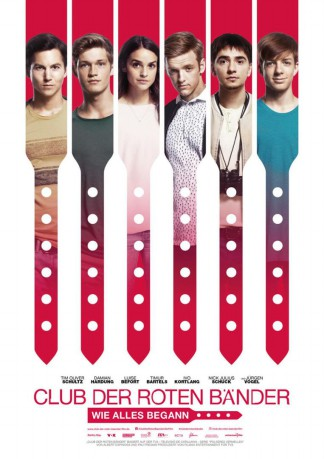

IMDB-Wertung: 6.5 / 10
IMDB-Wertung: 6.5 / 10  Metascore:
Metascore: 
 IMDB-Wertung: 6.5 / 10 Metascore:
Jahr: 2019
Dauer: 112 Minuten
FSK: 6
Land: Deutschland Studio: UFATonspuren:
Untertitel:
Auflösung: 1080p (1920x808) Größe: 3962 MB
Genre: Drama
Regisseur: Felix Binder
Drehbuch: Arne Nolting, Jan Martin Scharf, Albert Espinosa
Soundtrack: Jens Oettrich
Darsteller:
 Jörn Hentschel als Ludwig Wolfshagen
Jörn Hentschel als Ludwig Wolfshagen Tim Oliver Schultz als Leo Roland
Tim Oliver Schultz als Leo Roland Robert Schupp als Vater Vogel
Robert Schupp als Vater Vogel Jürgen Vogel als Benjamin 'Benni' Sorg
Jürgen Vogel als Benjamin 'Benni' SorgDatei: X:\2019(A-F)\Club der roten Bänder - Wie alles begann (2019, FSK6, 1920x808).mkv seit 22.07.2019
Festplatte: HD 2018(G-Z)-2019(A-Z)
 Es gibt insgesamt 60 Filme in der Gruppe '2019(A-F)'
Es gibt insgesamt 60 Filme in der Gruppe '2019(A-F)'